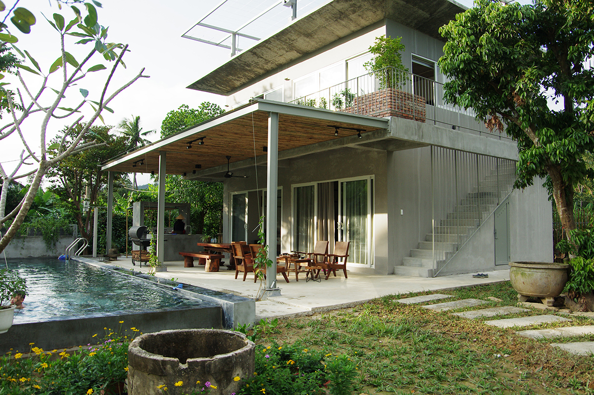

Pictures/Videos
Pictures/Videos
 Check in
Check in
 Tag
Tag
-
Thành phố Hồ Chí Minh, với sự phát triển mạnh mẽ trong những năm gần đây, là một thành phố sôi động và năng động. Tôi rất thích không khí sống động và đa dạng văn hóa của thành phố này. Từ các con đường rộng đến các ngõ hẹp, từ các phố chợ đông đúc đến các trung tâm thương mại hiện đại, tất cả đều tạo nên một bức tranh đầy màu sắc của thành phố. Ngoài ra, tôi cũng ấn tượng với sự nhiệt huyết và ý chí của người dân ở đây để phát triển và cải thiện thành phố của mình. Thành phố Hồ Chí Minh thực sự là một điểm đến tuyệt vời cho những người muốn khám phá và trải nghiệm văn hóa Việt Nam.


trnghuy.bru and 504 other treker liked -
hvanhuy
2 hours agoSống trong căn nhà của người khác cũng giúp tôi tìm hiểu và trải nghiệm văn hóa cộng đồng. Tôi đã được chủ nhà giới thiệu về các địa điểm thú vị trong khu vực và tham gia vào một số hoạt động dân gian tại địa phương. Tôi cảm thấy rất hứng thú khi được tìm hiểu về cách sống và văn hóa của người dân địa phương.
- 


xuanphong.paul and 504 other treker liked
trnghuy.bru
Lovely. Thank you for visiting Ho Chi Minh City. Hope next time I will visit your place
2 minutes ago Replyxuanphong.paul
Lovely. Thank you for visiting Ho Chi Minh City. Hope next time I will visit your place
2 minutes ago Reply

xuanphong.paul
Xin chào! Tôi rất vui được đến thăm thành phố Hồ Chí Minh. Tôi hy vọng rằng bạn sẽ có cơ hội đến thăm nơi của tôi trong tương lai.
linh.meo
Cảm ơn bạn đã chia sẻ những trải nghiệm tuyệt vời của mình tại Hồ Chí Minh. Tôi hy vọng rằng bạn đã có một chuyến đi đầy thú vị và đầy ý nghĩa.